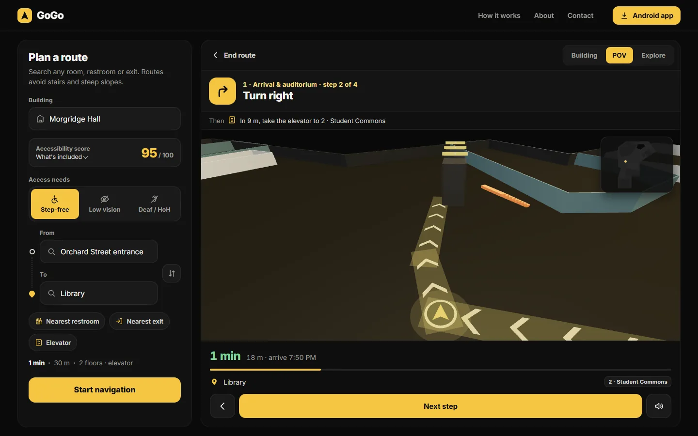

Indoor navigation for accessibility
Step-free directions inside the building.
GoGo plans routes that avoid stairs, steep ramps and narrow doorways, then guides you turn by turn, with spoken directions and a 3D view of the floor you're on.
- Free to use
- No account
- Android 8.0 and newer
- 5
- campus buildings mapped
- 247
- rooms and places you can search
- 3,750
- routes checked automatically on every change
- 3
- access profiles: step-free, low vision, Deaf
The gap
Phone maps stop at the front door.
Outside, you get a blue line to the entrance. Inside, the things that decide whether you can get somewhere, like where the elevator is, which entrance has no steps and where the accessible restroom is, are spread across PDF floor plans, wall signs and whoever is at the front desk.
For a wheelchair user, a wrong turn can mean backtracking a whole floor to find a lift. GoGo puts that information into a route you can follow.
- "Room 2120 is on the second floor. Take the stairs past the café."
- "Head straight 12 m, take the elevator to Floor 2, then turn left. 2 minutes."
How it works
From "where is it?" to "I'm here" in three steps.
Search where you're going
Type a room number, a name like "Great Hall", or just "restroom". Results appear as you type, with the floor for each one.
GoGo plans around your needs
Step-free routes skip stairs, slopes steeper than 8% and doorways narrower than 90 cm. Elevators and ramps are chosen for you.
Follow it, step by step
A banner shows the next turn and how far it is. Hear each step read aloud, or follow the 2D map, the 3D model or the navigation view.
Features
Built for the people standard maps leave out.
Routes for how you move
Pick step-free, low vision or Deaf and hard of hearing. Each profile changes the route and how it's explained.
Search every room
Rooms, galleries, restrooms, elevators and exits, all searchable by name or number. One tap finds the nearest restroom or exit.
See it or hear it
Every step is read aloud on request. On Android you can also ask by voice: "Take me to the nearest restroom."
Three ways to view
A flat 2D floor plan, a 3D model of every floor, and a navigation view that follows you like a car sat-nav.
Clear about what's verified
If a route ends near a restroom rather than at its door, or an exit isn't a verified evacuation route, GoGo says so.
Web and Android
Plan on a laptop or follow on your phone. Routing runs on the device, so the Android app keeps working with a weak signal.

Mapped so far
Five buildings, built from real floor plans.
Pick one to open it in the navigator. Each score is our estimate from the step-free entrances, elevators and restrooms we've mapped.
Scores have not been independently audited. Always follow posted signs, and in an emergency follow staff directions.
For campuses and venues
Bring GoGo to your building.
Send us your floor plans. We turn them into a routable indoor map, test every route between mapped rooms, and publish it on the web and Android, with your visitors' access needs built in.
- Universities
- Hospitals
- Museums
- Stadiums & arenas
- Airports & stations